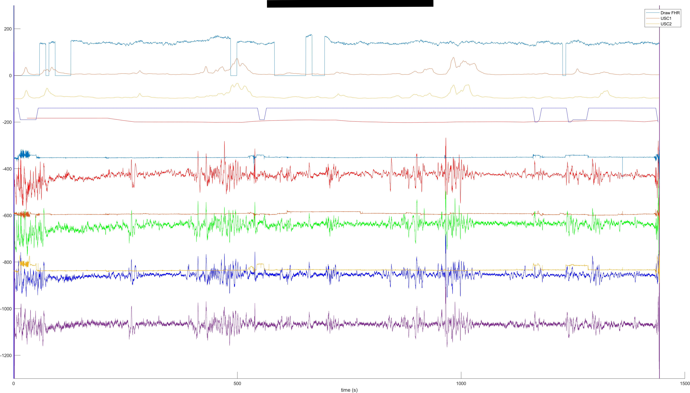
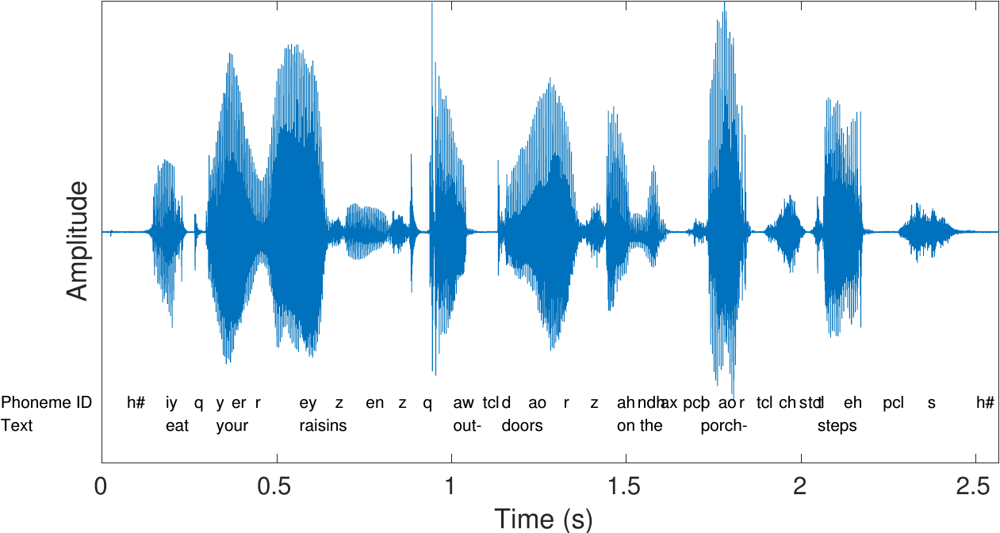
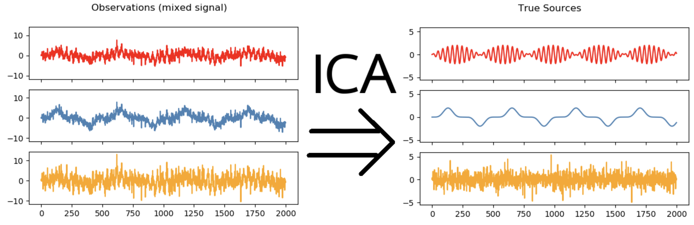

<!DOCTYPE html>
<html lang="en">
  <head>
    <meta charset="utf-8" />
    <meta name="viewport" content="width=device-width, initial-scale=1.0, maximum-scale=1.0, user-scalable=no" />

    <title>独立成分分析 ICA</title>
    <link rel="shortcut icon" href="./favicon.ico" />
    <link rel="stylesheet" href="./dist/reset.css" />
    <link rel="stylesheet" href="./dist/reveal.css" />
    <link rel="stylesheet" href="./dist/theme/simple.css" id="theme" />
    <link rel="stylesheet" href="./css/highlight/tomorrow-night-bright.css" />

    <link rel="stylesheet" href="./assets/IroBright.css" />

  </head>
  <body>
    <div class="reveal">
      <div class="slides"><section  data-markdown><script type="text/template">

# ICA
------
### 2023/4/19


👉 Given by xy

👉 Powered by [reveal.js](https://github.com/hakimel/reveal.js)

<aside class="notes"><p>Test note.</p>
</aside></script></section><section ><section data-markdown><script type="text/template">

# 何为 ICA
------
What is **I**ndependent **C**omponent **A**nalysis?

</script></section><section data-markdown><script type="text/template">

<center>
  肌电信号
  <br>
  
</center>

</script></section><section data-markdown><script type="text/template">

<center>
  脑电信号
  <br>
  
</center>

</script></section><section data-markdown><script type="text/template">

<center>
  语音信号
  <br>
  
</center>

</script></section><section data-markdown><script type="text/template">

<center>
  <s>Lenna</s> 图像信号
  <br>
  
</center>

</script></section><section data-markdown><script type="text/template">

<!-- .slide: data-background="img/6.png" -->

🤔 一般情况下我们需要处理的信号都是存在某种**混合**关系的，比如：目标信号&噪声信号 / 盲源信号 / ... 
<!-- .element: class="fragment" -->

<br>

🤯 绿豆黄豆黑豆红豆紫豆蓝豆白豆欢乐豆都混在一起了‼️ 
<!-- .element: class="fragment" -->

</script></section><section data-markdown><script type="text/template">
<!-- .slide: data-transition="fast-in fade-out" -->


<center>
  🧠 独立成分分析 
  <br>
  <b>I</b>ndependent <b>C</b>omponent <b>A</b>nalysis
  <br>
  
</center>

</script></section><section data-markdown><script type="text/template">
<!-- .slide: data-transition="fade-in" -->

<center>
  🧠 <b>独立</b>成分分析 
  <br>
  <b>Independent</b> Component Analysis
  <br>
  
</center>

</script></section><section data-markdown><script type="text/template">

## ICA 的常见应用
------
Application

</script></section><section data-markdown><script type="text/template">

1. **盲源分离**：<font color=lightgray>在音频信号、图像信号处理和数据挖掘等领域中，ICA可以对多个源信号进行盲源分离，从而分离出各自独立的源信号，是一种常用的信号处理方法；</font>
2. **特征提取**：<font color=lightgray>ICA 可以在多个信号中找到相互独立的因素，从而提取有用的特征，例如在图像识别领域中，可以使用ICA提取出独立的特征来进行图像分类和识别；</font>
3. **数据预处理**：<font color=lightgray>ICA 可以通过提取独立的因素，消除数据中的冗余和噪声，从而提高数据的质量，例如在 EEG 信号处理领域，ICA 可以用来去除信号中的眼电伪影和肌电伪影等噪声；</font>
4. **脑成像分析**：<font color=lightgray>ICA 可以分离出大脑中各种不同来源的信号，例如血氧水平依赖信号(BOLD)和神经元活动相关信号，用来分析大脑的功能连接和活动；</font>
5. **人脸识别**：<font color=lightgray>ICA 可以用来提取人脸图像中的独立特征，从而进行人脸识别和身份验证；</font>
6. ...

</script></section></section><section ><section data-markdown><script type="text/template">

# ICA 如何实现
------
How to implement **I**ndependent **C**omponent **A**nalysis?

</script></section><section data-markdown><script type="text/template">

### 问题建模

🎯 **目标**：从混合信号中分离出独立信号源。

🧩 **建模**：设 $X$ 为混合信号，$S$ 为独立信号源，用满秩矩阵 $A$ 来描述“信号混合”这个过程，即：

$$
X = \mathbf{A}S\\\\
\begin{pmatrix}
x_1\\\\
x_2\\\\
\vdots\\\\
x_N
\end{pmatrix}
=
\begin{pmatrix}
a_{11} & a_{12} & \cdots & a_{1N}\\\\
a_{21} & a_{22} & \cdots & a_{2N}\\\\
\vdots & \vdots & \ddots & \vdots\\\\
a_{N1} & a_{N2} & \cdots & a_{NN}
\end{pmatrix}
\begin{pmatrix}
s_1\\\\
s_2\\\\
\vdots\\\\
s_N
\end{pmatrix}
$$

</script></section><section data-markdown><script type="text/template">

### 问题建模

🎯 **目标**：从混合信号中分离出独立信号源。

🧩 **建模**：移项，$X$ 为混合信号，$S$ 为独立信号源，可以用满秩矩阵 $A$ 的逆，记为 $W$ 来描述“信号分解”这个过程，即：

$$
\mathbf{A}^{-1}X = \mathbf{W}X = S\\\\
\begin{pmatrix}
w_{11} & w_{12} & \cdots & w_{1N}\\\\
w_{21} & w_{22} & \cdots & w_{2N}\\\\
\vdots & \vdots & \ddots & \vdots\\\\
w_{N1} & w_{N2} & \cdots & w_{NN}
\end{pmatrix}
\begin{pmatrix}
x_1\\\\
x_2\\\\
\vdots\\\\
x_N
\end{pmatrix}
=
\begin{pmatrix}
s_1\\\\
s_2\\\\
\vdots\\\\
s_N
\end{pmatrix}
$$

</script></section><section data-markdown><script type="text/template">

### 问题建模

🎯 **目标**：从混合信号中分离出独立信号源。

🧩 **建模**：于是问题转化为，已知 $X$，估计 $W$，使 $S$ 为**独立**信号源。

$$
\mathbf{W}X = S
$$

🚫 **限制**：

1. $S$ 为独立信号源，即 $S$ 的各个分量——独立成分之间相互独立，这个独立指的是**统计独立**；
2. 独立成分应当是非高斯分布的(ICA认为一个信号可以被分解成若干个统计独立的分量的线性组合，而后者携带更多的信息。我们可以证明，只要源信号非高斯，那么这种分解是唯一的)；

</script></section><section data-markdown><script type="text/template">

### 问题建模

🎯 **目标**：从混合信号中分离出独立信号源。

🧩 **建模**：于是问题转化为，已知 $X$，估计 $W$，使 $S$ 为**独立**信号源。

$$
\mathbf{W}X = S
$$

🥲 **救命**：可以发现，如果还是把它当作一个方程来求解析解，那简直是<b><font color=red>束手无策</font></b>啊！
<!-- .element: class="fragment" -->
🥹 **转化**：所以我们将它转化为<b>最优化(Optimization)</b>问题。
<!-- .element: class="fragment" -->

</script></section><section data-markdown><script type="text/template">

### 最优化问题

$$
\text{give  } \underbrace{f}_{目标函数}:A\rightarrow \mathbb{R} \\\\
\text{find  } \mathbf{x}^0 \in A, s.t. \\; \forall \mathbf{x} \in A, \\; f(\mathbf{x^0}) \leq f(\mathbf{x}) \\;\\;(\text{or } \geq)
$$

</script></section><section data-markdown><script type="text/template">

### 最优化问题 AKA 数学规划

😉 线性规划
<!-- .element: class="fragment" -->
🧐 动态规划
<!-- .element: class="fragment" -->
...
<!-- .element: class="fragment" -->

</script></section><section data-markdown><script type="text/template">

### 最优化问题

😋 当目标函数具有良好性质的时候（二次可微）时，就可以直接通过解析方法求得<b>解析解</b>。
<!-- .element: class="fragment" -->

🥲 但事与愿违，我们需要解决的问题往往不具备这样的性质。
<!-- .element: class="fragment" -->

😮‍💨 不过我们可以通过<b>模型拟合</b>，使数据在<b>局部</b>具有良好性质。
<!-- .element: class="fragment" -->

||常见方法||
|:---:|:---:|:---:|
|遗传算法|梯度下降法|粒子群优化|
|类免疫算法|支持向量机|模拟退火|
||......||
<!-- .element: class="fragment" -->


</script></section><section data-markdown><script type="text/template">

### 问题建模

🎯 **目标**：从混合信号中分离出独立信号源。

🧩 **建模**：于是问题转化为，已知 $X$，估计 $W$，使 $S$ 为**独立**信号源。

$$
\mathbf{W}X = S
$$

🥇 **优化**：

$$
\text{give  } f:A\rightarrow \mathbb{R} \\\\
\text{find  } \mathbf{x}^0 \in A, s.t. \\; \forall \mathbf{x} \in A, \\; f(\mathbf{x^0}) \leq f(\mathbf{x}) \\;\\;(\text{or } \geq)
$$

🧐 我们需要一个目标函数！
<!-- .element: class="fragment" -->

</script></section><section data-markdown><script type="text/template">

### 目标函数

🔍 **似然函数**：似然函数给出了观测数据在当前参数下出现的可能性，而这个可能性越大，说明当前的参数设置越可能是正确的。

$$
L(\theta \mid x_1, x_2, \dots, x_n) = \prod_{i=1}^n f(x_i \mid \theta)
$$

🔍 **峭度**：对于ICA问题，我们希望独立成分之间的差异性尽可能大，因此可以使用峭度作为非高斯性的度量。

$$
\frac{1}{n}\sum_{i=1}^{n} \left(\frac{x_i-\overline{x}}{\sigma(x)}\right)^4 - 3
$$


</script></section><section data-markdown><script type="text/template">

### 技巧

👍 **白化**：我们还可以使用白化等方法对数据进行预处理，消除输入信号中的相关性和冗余信息, 使得独立成分之间的差异性更大。具体来说就是令 $\mathop{Cov}(X) = E$：

$$
\mathop{Cov}(X) = \begin{bmatrix} 
  \mathop{Var}(X_1) & \mathop{Cov}(X_1, X_2) & \dots & \mathop{Cov}(X_1, X_n) \\\\ 
  \mathop{Cov}(X_2, X_1) & \mathop{Var}(X_2) & \dots & \mathop{Cov}(X_2, X_n) \\\\
  \vdots & \vdots & \ddots & \vdots \\\\ 
  \mathop{Cov}(X_n, X_1) & \mathop{Cov}(X_n, X_2) & \dots & \mathop{Var}(X_n)
\end{bmatrix} \\\\
\forall i \in {1,2,...,n}\\;\\;\\;\mathop{Var}(X_i) = 1
$$

</script></section></section><section ><section data-markdown><script type="text/template">

# 相关工作
------
Related works.

</script></section><section data-markdown><script type="text/template">

- **FastICA**: Hyvärinen, A., & Oja, E. (2000). Independent component analysis: algorithms and applications. Neural networks, 13(4-5), 411-430.
- **Kernel ICA**: Bach, F. R., & Jordan, M. I. (2002). Kernel independent component analysis. Journal of machine learning research, 3(Jul), 1-48.
- **Robust ICA**: Mollah, M. N. H., Eguchi, S., & Minami, M. (2007). Robust prewhitening for ICA by minimizing β-divergence and its application to FastICA. Neural Processing Letters, 25, 91-110.
- ...

- `sklearn.decomposition.FastICA` @ Python

</script></section></section><section  data-markdown><script type="text/template">

# TY4L
------
Any questions?</script></section></div>
    </div>

    <script src="./dist/reveal.js"></script>

    <script src="./plugin/markdown/markdown.js"></script>
    <script src="./plugin/highlight/highlight.js"></script>
    <script src="./plugin/zoom/zoom.js"></script>
    <script src="./plugin/notes/notes.js"></script>
    <script src="./plugin/math/math.js"></script>
    <script>
      function extend() {
        var target = {};
        for (var i = 0; i < arguments.length; i++) {
          var source = arguments[i];
          for (var key in source) {
            if (source.hasOwnProperty(key)) {
              target[key] = source[key];
            }
          }
        }
        return target;
      }

      // default options to init reveal.js
      var defaultOptions = {
        controls: true,
        progress: true,
        history: true,
        center: true,
        transition: 'default', // none/fade/slide/convex/concave/zoom
        slideNumber: true,
        plugins: [
          RevealMarkdown,
          RevealHighlight,
          RevealZoom,
          RevealNotes,
          RevealMath
        ]
      };

      // options from URL query string
      var queryOptions = Reveal().getQueryHash() || {};

      var options = extend(defaultOptions, {"margin":0.04,"transition":"slide","slideNumber":true}, queryOptions);
    </script>


    <script>
      Reveal.initialize(options);
    </script>
  </body>
</html>
